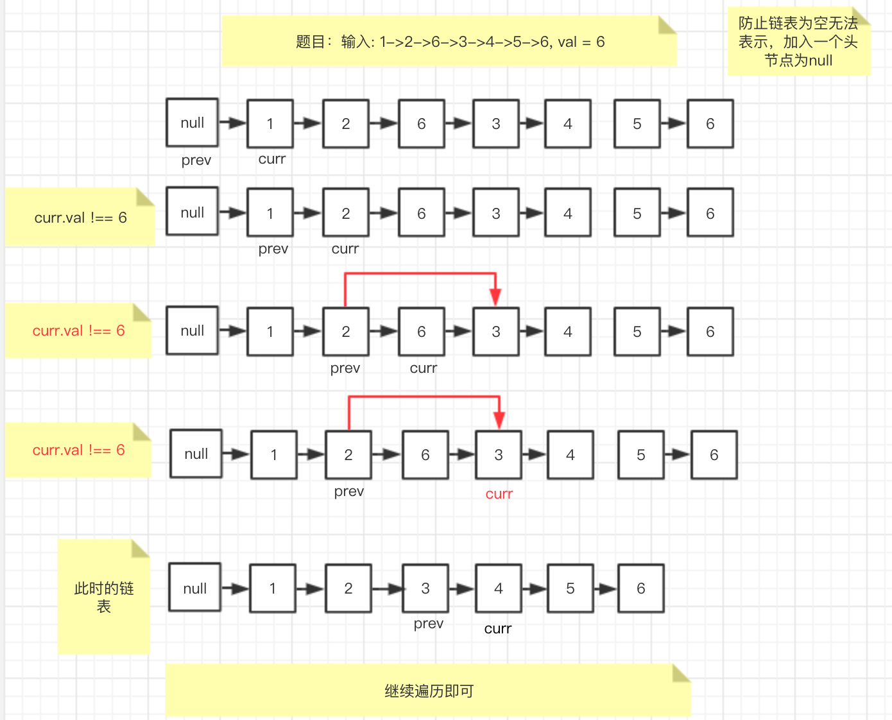

移出链表元素
时间复杂度：O(n)
空间复杂度 O（1）
图解如下：

- JS 代码如下:
/**
* Definition for singly-linked list.
* function ListNode(val, next) {
* this.val = (val===undefined ? 0 : val)
* this.next = (next===undefined ? null : next)
* }
*/
/**
* @param {ListNode} head
* @param {number} val
* @return {ListNode}
*/
var removeElements = function(head, val) {
let newHead = new ListNode(null);
let pre = newHead;
let cur = head;
newHead.next = head;
while(cur!=null){
let next = cur.next
if(cur.val !== val){
pre = cur;
cur = next;
}else{
cur = next;
pre.next = cur;
}
}
return newHead.next
};
关键点 1： 使用虚拟头节点 null 作为初始节点进行迭代
关键点 2： 虚拟头节点定义为新链表，返回 newList.next